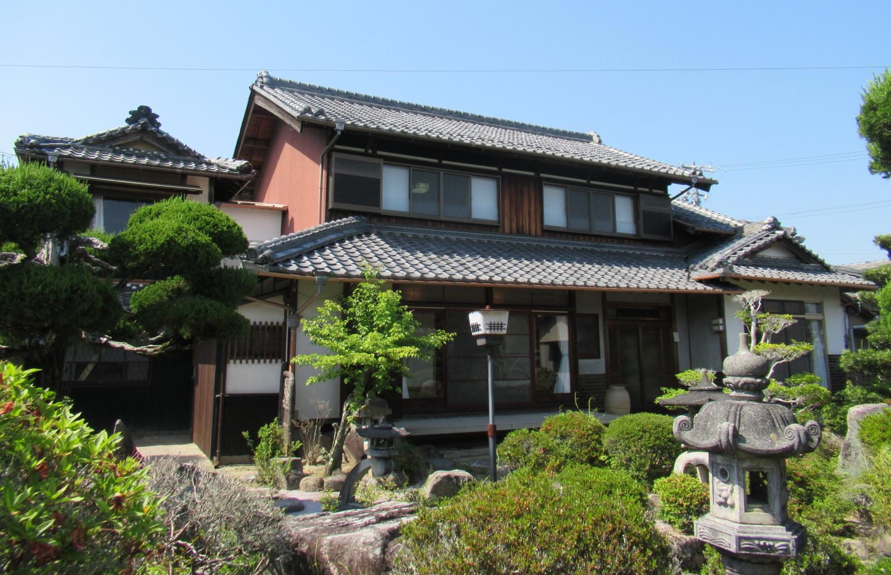
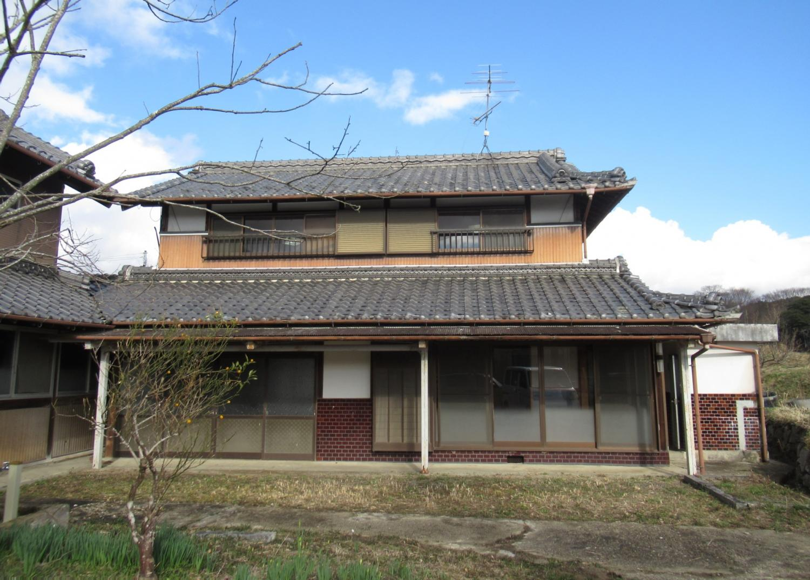

庵 · いおり
隠れ家には、名前がある。
「庵（いおり）」とは、山里に結ぶ小さな住まいのこと。都会を離れて、休み、読み、お茶を楽しむための隠れ家です。昔から歌人や茶人が庵を持ちました。伊賀が生んだ俳人・松尾芭蕉の名前も、自らの庵「芭蕉庵」に由来します。
Hidden Iga は、あなたの庵探しをお手伝いします。腰を下ろしたくなる庭、野菜を育てる畑、物語の詰まった蔵。そして、家にまた明かりがともるのを喜んでくれる村があります。
物件一覧
伊賀の、田舎の家。
伊賀市の「伊賀流空き家バンク」に掲載されている、農村部・山間部の売却物件です。価格は売主の売り出し価格です。
-
 農村部エリア360°内覧
農村部エリア360°内覧伊賀市伊勢路（いせじ） No. 264
別宅（木造2階建て）付きの木造平屋
- 7DK
- 建物 108㎡
- 土地 385㎡
200万円
-
 農村部エリア360°内覧
農村部エリア360°内覧伊賀市大内（おおうち） No. 596
コンビニ近く！農家式住宅の古民家
- 8DK
- 建物 191㎡
- 土地 772㎡
250万円
-
 山間部エリア360°内覧
山間部エリア360°内覧伊賀市上神戸（かみかんべ） No. 556
閑静な住宅地にある、敷地の広い木造2階建て（平成4年）
- 4LDK
- 建物 104㎡
- 土地 294㎡
250万円
-
 農村部エリア
農村部エリア伊賀市島ヶ原（しまがはら） No. 232
島ヶ原駅まで900mの木造2階建て（昭和36年）
- 12K
- 建物 195㎡
- 土地 400㎡
300万円
-

農村部エリア360°内覧伊賀市川合（かわい） No. 581
別棟で倉庫・物置のある収納豊富な古民家
- 10DK
- 建物 251㎡
- 土地 797㎡
500万円
-
 農村部エリア360°内覧
農村部エリア360°内覧伊賀市川東（かわひがし） No. 564
古いかまどが残る木造2階建ての古民家
- 12K
- 建物 280㎡
- 土地 458㎡
550万円
-
農村部エリア360°内覧
伊賀市甲野（こうの） No. 614
家の近くに畑あり！2階建て倉庫のある古民家
- 10DK
- 建物 134㎡
- 土地 445㎡
580万円
-
 農村部エリア360°内覧
農村部エリア360°内覧伊賀市上阿波（かみあわ） No. 450
478㎡の畑つき、広い木造2階建ての古民家
- 10DK
- 建物 286㎡
- 土地 766㎡
600万円
-
 農村部エリア360°内覧
農村部エリア360°内覧伊賀市阿保（あお） No. 580
駅・スーパー・コンビニが徒歩圏内の古民家
- 8DK
- 建物 228㎡
- 土地 897㎡
650万円
-
 山間部エリア360°内覧
山間部エリア360°内覧伊賀市大谷（おおたに） No. 599
農地・山林つき！かまどが残る古民家（土地7,331㎡）
- 7K
- 建物 286㎡
- 土地 7,332㎡
780万円
-
 農村部エリア
農村部エリア伊賀市下神戸（しもかんべ） No. 119
蔵・車庫つきの木造2階建て（昭和56年）
- 10DK
- 建物 173㎡
- 土地 893㎡
980万円
-
 農村部エリア360°内覧
農村部エリア360°内覧伊賀市西明寺（さいみょうじ） No. 430
隣地に274㎡の畑がある、広い古民家（昭和40年）
- 11DK
- 建物 314㎡
- 土地 433㎡
1,200万円
-
 農村部エリア360°内覧
農村部エリア360°内覧伊賀市平田（ひらた） No. 583
1,420㎡の敷地に母屋と離れがある家（平成2年）
- 7DK
- 建物 224㎡
- 土地 1,420㎡
1,680万円
間取りの「8DK」は、8部屋＋ダイニングキッチンの意味です。
伊賀について
静かな谷あい、でも都市に近い。
伊賀市は三重県の北西部、大阪・京都・奈良に囲まれた山あいのまちです。伊賀忍者の里、俳人・松尾芭蕉のふるさととして知られ、米どころ、お茶、酒、伊賀焼の産地でもあります。
市の周りの農村部・山間部には、住む人のいなくなった大きな古い家が数多く残っています。伊賀市は独自の空き家バンクで新しい住み手を探しており、物件ごとに状態の調査メモ、間取り図、動画を公開しています。
- 大阪・名古屋・京都へ鉄道でつながる
- 庭・畑・蔵のある、広い敷地の家が多い
- 市の調査による、正直な状態の説明
【要確認】大阪・京都・関西空港からの所要時間
購入の流れ
探すところから、住むところまで。
- 01
物件を選ぶ
物件情報、状態の調査メモ、間取り図をご説明します。気になることは何でもご相談ください。
- 02
登録・内覧
内覧の予約には、伊賀流空き家バンクへの利用者登録が必要です。登録の準備から内覧の手配まで、現地でもオンラインでもお手伝いします。
- 03
申込み・契約
売買の仲介は、日本の宅地建物取引業者が行います。私たちは書類の説明や、業者・売主とのやりとりを支えます。
- 04
決済・登記
代金の支払い、司法書士による所有権の登記、購入時にかかる税金まで、手順をご案内します。
- 05
入居・管理
鍵、電気・水道、地元の職人の手配。留守の間は、現地の管理人が家を見守ります。
伊賀市公認パートナー
伊賀市と二人三脚で
Hidden Iga は、伊賀流空き家バンクを運営する伊賀市役所のバックアップを受けた、正式なエージェントです。物件情報、調査メモ、内覧はすべて市から直接。自治体が後ろについている安心感の中で、購入を進められます。
【要確認】伊賀市との協定・登録の正式名称と、サイトに記載することへの市の了承

留守の間も見守ります管理サービス
あなたの家を、現地の管理人が。
セカンドハウスは、留守の間も安心できてこそ楽しめるもの。伊賀では、地元の管理人があなたに代わって家を見守ります。いつ訪れても、風が通り、手入れの行き届いた家でお迎えします。
- 定期的な見回り窓を開けて風を通し、水を流して、木造の古い家を傷ませないようにします。
- 嵐のあとに大雨や台風のあとに、屋根・雨どい・庭を点検し、写真でご報告します。
- 庭と敷地草刈りと手入れで、ご近所にも気持ちよく。
- 修理の手配地元の職人を手配し、作業を見守り、見積もりをご説明します。
- 到着の準備鍵の管理、郵便物の受け取り、到着前の準備まで。
【要確認】管理サービスの内容・頻度・料金
料金
わかりやすく、物件価格の10%。
購入サポート料は、物件価格の10%です。お支払いは購入完了時。最初のお問い合わせから入居までのサポートを含みます。
このほか、宅地建物取引業者の仲介手数料（法律で上限あり）、登記・司法書士費用、不動産取得税、印紙税、固定資産税などは、購入者のご負担となります。お申込みの前に見積もりをお出しします。
【要確認】料金の仕組みと表記（日本の不動産の専門家に確認）
- 物件価格
- ¥5,000,000
- 購入サポート料（10%）
- ¥500,000
- 合計
- ¥5,500,000
よくある質問
よくあるご質問
外国籍の人や海外在住の人でも買えますか？
日本では、外国籍の方や海外にお住まいの方でも住宅を所有できます。購入にビザは必要ありません。ただし、家を持っても日本に住む権利が得られるわけではなく、滞在はビザによります。【要確認】
家についている畑も買えますか？
農地は別の扱いです。農地の売買には農地法の許可が必要で、原則として耕作する人にしか許可が出ません。掲載物件の中にもこの注意書きがあるものがあり、物件ごとに市と業者に確認します。
家の状態はどうですか？
古く、手入れの必要な家が多くあります。市は雨漏りからトイレの不具合まで、わかっている点をすべて公開しています。ご購入の前に、点検や改修の見積もりも手配できます。
現地に行く必要はありますか？
少なくとも一度は現地をご覧いただくことをおすすめします。内覧は動画からでも始められ、多くの手続きは遠隔でも進められますが、契約や決済でご本人か代理人が必要になる場合があります。
留守の間、家は誰が見てくれますか？
伊賀の地元の管理人です。定期的に風を通して点検し、嵐のあとには屋根や庭を確認、鍵を預かって到着前に準備を整え、写真とともにご報告します。【要確認】
売主は誰ですか？
個人の所有者です。物件は伊賀流空き家バンクで公開され、売買は宅地建物取引業者が仲介します。私たちはその全体をご案内します。